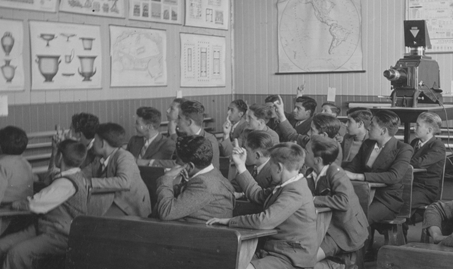

Retos Educativos en las sociedades
Linea del tiempo
John Locke publica “Algunos Pensamientos sobre la Educación”, donde declara que ninguna de las cosas que se van a aprender, jamás deberían ser hechas para agobiarlos o imponerlas como tareas (colaboradores de Wikipedia, 2024).
Jean-Jacques Rousseau publica “Émile”, un libro de consejos de educación donde el alumno imaginario solo aprende lo que él pudiera apreciar como útil (colaboradores de Wikipedia, 2024).
León Tolstói establece una escuela para niños campesinos en su propio estado en Yasnaya Polyana, Rusia (colaboradores de Wikipedia, 2024).
Inicio de la educación democrática con la creación de las primeras escuelas democráticas y la implementación de la educación obligatoria.

Desarrollo de la educación democrática con la expansión de la educación a nivel mundial y la incorporación de la educación inclusiva y equitativa.
Se redactó la Constitución estableciendo en el Art. 3°que la educación debía ser gratuita, obligatoria y laíca (Línea Del Tiempo: Historia De La Educación En México Siglo XIX-XX, n.d.).
Declaración de los Derechos del Niño (https://plus.google.com/+UNESCO, 2021).
Restauración de la democracia. Se destacan hitos políticos, sociales, culturales y educativos importantes (Devteam, n.d.).
Adopción del Marco de Acción Educación 2030 (París, Francia) y Adopción de los Objetivos de Desarrollo Sostenible (Nueva York, Estados Unidos) (https://plus.google.com/+UNESCO, 2021).
Creación de la Comisión sobre los Futuros de la educación (https://plus.google.com/+UNESCO, 2021).
Creación de la Coalición Mundial para la Educación en respuesta a la crisis de la COVID-193 (https://plus.google.com/+UNESCO, 2021).